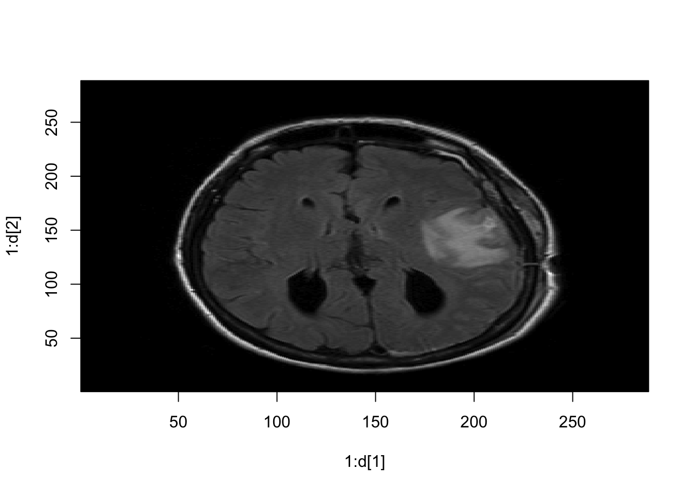
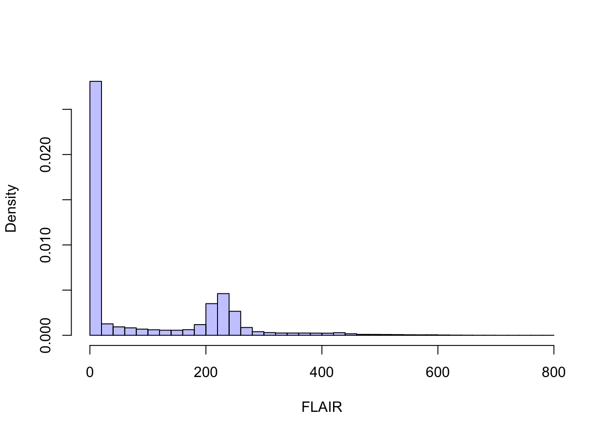

Lecture 1 DICOM
DICOM (Digital Imaging and Communications in Medicine) format
- Standardized representation of images
- Formats of files from scanner to hospital PACS (picture archiving and communication system)
- Two components: image data (in pixles) and header (metadata)
1.1 readDICOM Output
The pixel data in a DICOM file is a matrix
One DICOM file = one "slice of the brain
The oro.dicom package enables reading DICOM files in R.
Each slice is stored as a list.
## oro.dicom 0.5.3slice = readDICOM("Neurohacking_data/BRAINIX/DICOM/FLAIR/IM-0001-0011.dcm")
suppressMessages(class(slice))## [1] "list"This contains two lists: hdr and img
## [1] "hdr" "img"## [1] "list"## [1] "list"Each element of hdr is a data.frame and each element of img is a matrix
## [1] "data.frame"## [1] "matrix"## [1] 288 2881.2 DICOM Images
We can look at the image in R.

For analysis we want to look at the numbers in the matrix, not the image in the grayscale.
1.2.1 Working with the numbers
## [,1] [,2] [,3] [,4] [,5]
## [1,] 4 34 36 75 222
## [2,] 9 44 33 117 248
## [3,] 19 47 54 167 274
## [4,] 27 28 98 239 286
## [5,] 12 45 170 288 307And we can plot the data as usual using histograms
hist(slice$img[[1]][,], #all elements
breaks=50, xlab="FLAIR",
prob=T, col = rgb(0, 0, 1, 1/4),
main="")
1.3 DICOM Header Information
Now let’s look at the header.
## 'data.frame': 162 obs. of 7 variables:
## $ group : chr "0002" "0002" "0002" "0002" ...
## $ element : chr "0000" "0001" "0002" "0003" ...
## $ name : chr "GroupLength" "FileMetaInformationVersion" "MediaStorageSOPClassUID" "MediaStorageSOPInstanceUID" ...
## $ code : chr "UL" "OB" "UI" "UI" ...
## $ length : chr "4" "2" "26" "62" ...
## $ value : chr "210" "\001" "1.2.840.10008.5.1.4.1.1.4" "1.3.46.670589.11.0.0.11.4.2.0.8743.5.5396.2006120114313982544" ...
## $ sequence: chr "" "" "" "" ...Each row of the dataframe has a name:
## [1] "GroupLength"
## [2] "FileMetaInformationVersion"
## [3] "MediaStorageSOPClassUID"
## [4] "MediaStorageSOPInstanceUID"
## [5] "TransferSyntaxUID"
## [6] "ImplementationClassUID"
## [7] "ImplementationVersionName"
## [8] "SourceApplicationEntityTitle"
## [9] "SpecificCharacterSet"
## [10] "ImageType"
## [11] "InstanceCreationDate"
## [12] "InstanceCreationTime"
## [13] "InstanceCreatorUID"
## [14] "SOPClassUID"
## [15] "SOPInstanceUID"
## [16] "StudyDate"
## [17] "SeriesDate"
## [18] "AcquisitionDate"
## [19] "ContentDate"
## [20] "StudyTime"
## [21] "SeriesTime"
## [22] "AcquisitionTime"
## [23] "ContentTime"
## [24] "AccessionNumber"
## [25] "Modality"
## [26] "Manufacturer"
## [27] "InstitutionName"
## [28] "ReferringPhysiciansName"
## [29] "StationName"
## [30] "StudyDescription"
## [31] "ProcedureCodeSequence"
## [32] "Item"
## [33] "CodeValue"
## [34] "CodingSchemeDesignator"
## [35] "CodeMeaning"
## [36] "ContextGroupExtensionFlag"
## [37] "ItemDelimitationItem"
## [38] "SequenceDelimitationItem"
## [39] "SeriesDescription"
## [40] "InstitutionalDepartmentName"
## [41] "ManufacturersModelName"
## [42] "ReferencedStudySequence"
## [43] "Item"
## [44] "ReferencedSOPClassUID"
## [45] "ReferencedSOPInstanceUID"
## [46] "ItemDelimitationItem"
## [47] "SequenceDelimitationItem"
## [48] "ReferencedPerformedProcedureStepSequence"
## [49] "Item"
## [50] "InstanceCreationDate"
## [51] "InstanceCreationTime"
## [52] "InstanceCreatorUID"
## [53] "ReferencedSOPClassUID"
## [54] "ReferencedSOPInstanceUID"
## [55] "InstanceNumber"
## [56] "ItemDelimitationItem"
## [57] "SequenceDelimitationItem"
## [58] "ReferencedImageSequence"
## [59] "Item"
## [60] "ReferencedSOPClassUID"
## [61] "ReferencedSOPInstanceUID"
## [62] "ItemDelimitationItem"
## [63] "Item"
## [64] "ReferencedSOPClassUID"
## [65] "ReferencedSOPInstanceUID"
## [66] "ItemDelimitationItem"
## [67] "Item"
## [68] "ReferencedSOPClassUID"
## [69] "ReferencedSOPInstanceUID"
## [70] "ItemDelimitationItem"
## [71] "SequenceDelimitationItem"
## [72] "PatientsName"
## [73] "PatientID"
## [74] "PatientsBirthDate"
## [75] "PatientsSex"
## [76] "PatientsWeight"
## [77] "PregnancyStatus"
## [78] "ScanningSequence"
## [79] "SequenceVariant"
## [80] "SliceThickness"
## [81] "RepetitionTime"
## [82] "EchoTime"
## [83] "InversionTime"
## [84] "NumberOfAverages"
## [85] "ImagingFrequency"
## [86] "ImagedNucleus"
## [87] "EchoNumbers"
## [88] "MagneticFieldStrength"
## [89] "SpacingBetweenSlices"
## [90] "NumberOfPhaseEncodingSteps"
## [91] "EchoTraInLength"
## [92] "PercentSampling"
## [93] "PercentPhaseFieldOfView"
## [94] "DeviceSerialNumber"
## [95] "SoftwareVersions"
## [96] "ProtocolName"
## [97] "LowRRValue"
## [98] "HighRRValue"
## [99] "IntervalsAcquired"
## [100] "IntervalsRejected"
## [101] "HeartRate"
## [102] "ReconstructionDiameter"
## [103] "ReceiveCoilName"
## [104] "TransmitCoilName"
## [105] "AcquisitionMatrix"
## [106] "InPlanePhaseEncodingDirection"
## [107] "FlipAngle"
## [108] "PatientPosition"
## [109] "StudyInstanceUID"
## [110] "SeriesInstanceUID"
## [111] "StudyID"
## [112] "SeriesNumber"
## [113] "AcquisitionNumber"
## [114] "InstanceNumber"
## [115] "ImagePositionPatient"
## [116] "ImageOrientationPatient"
## [117] "FrameOfReferenceUID"
## [118] "TemporalPositionIdentifier"
## [119] "NumberOfTemporalPositions"
## [120] "SliceLocation"
## [121] "SamplesperPixel"
## [122] "PhotometricInterpretation"
## [123] "Rows"
## [124] "Columns"
## [125] "PixelSpacing"
## [126] "PixelAspectRatio"
## [127] "BitsAllocated"
## [128] "BitsStored"
## [129] "HighBit"
## [130] "PixelRepresentation"
## [131] "WindowCenter"
## [132] "WindowWidth"
## [133] "LossyImageCompression"
## [134] "RequestingService"
## [135] "RequestedProcedureDescription"
## [136] "PerformedStationAETitle"
## [137] "PerformedProcedureStepStartDate"
## [138] "PerformedProcedureStepStartTime"
## [139] "PerformedProcedureStepEndDate"
## [140] "PerformedProcedureStepEndTime"
## [141] "PerformedProcedureStepID"
## [142] "PerformedProcedureStepDescription"
## [143] "PerformedProtocolCodeSequence"
## [144] "Item"
## [145] "CodeValue"
## [146] "CodingSchemeDesignator"
## [147] "CodeMeaning"
## [148] "ContextGroupExtensionFlag"
## [149] "ItemDelimitationItem"
## [150] "SequenceDelimitationItem"
## [151] "RequestAttributesSequence"
## [152] "Item"
## [153] "ScheduledProcedureStepDescription"
## [154] "ScheduledProcedureStepID"
## [155] "RequestedProcedureID"
## [156] "ItemDelimitationItem"
## [157] "SequenceDelimitationItem"
## [158] "FilmConsumptionSequence"
## [159] "SequenceDelimitationItem"
## [160] "RequestedProcedureID"
## [161] "PresentationLUTShape"
## [162] "PixelData"Let’s look at the "PixelSpacing" for this images, which represents the resolution of the image.
## [1] "0.79861110448837 0.79861110448837"We can also look at the Flip Angle used while collecting the image.
## group element name code length value sequence
## 107 0018 1314 FlipAngle DS 4 90.01.4 Loading Multiple DICOM Files
For analysis, we will need to read in all the slices. Specifying a directory instead of a file name in readDICOM will load all images in that directory as a single object.
Examining the dimensions of the first slice shows that the T1 image has a higher resolution than the FLAIR image. Thus this is a bigger
## [1] 512 512## [1] "0.46875 0.46875"1.5 Summary
-DICOM files contain a lot of information -Image data are stored as collection of 2D slice files -Different sequences can have different resolutions -Data and metadata can be accessed in R -Contains protected health data -Structure is cumbersome for 3D analysis -A genuine 3D format is needed:: NIfTI